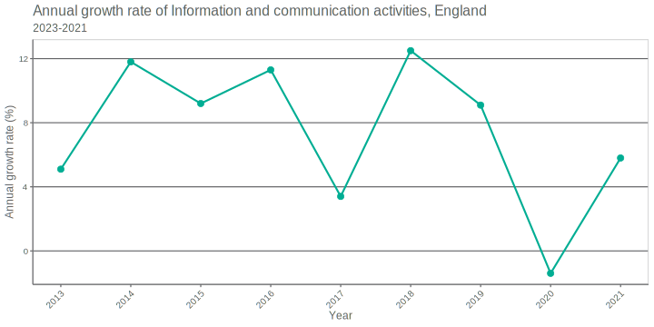

4 Exercise solution
Minimum: -1.4% (2020)
Maximum: 12.5% (2018)
Average: 7.4%

alt text
4.1 Code
Data filtering script:
library(dplyr)
library(readr)
filter_data <- function(df){
# print columns
print(colnames(df))
# print industry types
print(unique(df$UnofficialStandardIndustrialClassification))
# remove NAs, filter by industry, geography and growth rate figure
health_gdp_time_series <- df %>%
filter(!is.na(v4_1)) %>%
filter(UnofficialStandardIndustrialClassification == "J: Information and communication") %>%
filter(Geography == "England") %>%
filter(GrowthRate == "Annual growth rate")
# set year as a number and sort by
health_gdp_time_series_sorted <- health_gdp_time_series %>%
mutate(Time = as.numeric(Time)) %>%
arrange(Time)
# save data to csv
write_csv(
health_gdp_time_series_sorted,
file = "./output/info_gdp_time_series_sorted.csv"
)
}
Plotting:
library(ggplot2)
plot_data <- function(df){
# plot
ggplot(data = df,
aes(Time,
v4_1,
colour = UnofficialStandardIndustrialClassification)) +
DHSCcolours::theme_dhsc() +
geom_line(linewidth = 1) +
geom_point(size = 3) +
theme(legend.position="none") +
DHSCcolours::scale_colour_dhsc_d() +
labs(
title = "Annual growth rate of Information and communication activities, England",
subtitle = "2023-2021",
x = "Year",
y = "Annual growth rate (%)") +
scale_x_continuous(breaks=seq(2013,2021,1))
# save the plot
ggsave("./output/information_gdp_chart.svg",
height = 5,
width = 10,
units="in",
dpi=300)
}
Summary stats:
library(dplyr)
#get summary stats
summary_stats <- function(df){
# get stats
minimum <- min(df$v4_1)
maximum <- max(df$v4_1)
average <- mean(df$v4_1)
stats = list("minimum" = minimum,
"maximum"= maximum)
# get week values for stats, print
for (name in names(stats)) {
stat_value = stats[[name]]
year_val <- df %>%
filter(v4_1 == stats[[name]]) %>%
select(Time) %>%
pull
print(paste("the ",name, "value is", stat_value, "(year:", year_val, ")"))
}
print(paste("the average value is",round(average,1)))
}